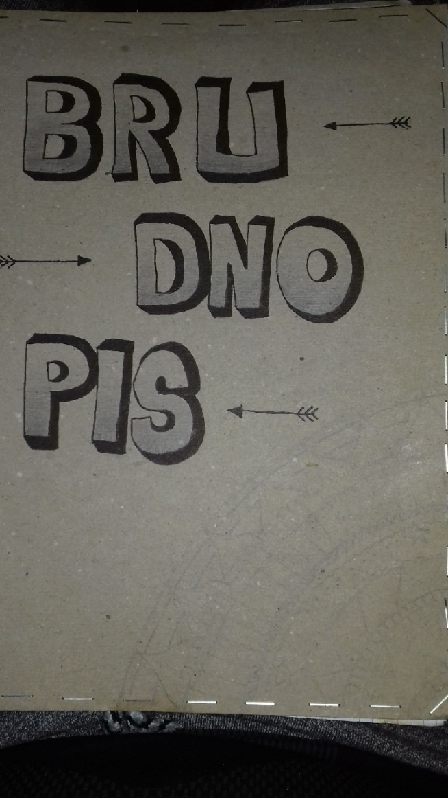

Brudnopis
Notatki
Lekcja 2.
Wpisy w sekcji head>, nie sa widoczne w przegladarce, tam umieszcza sie style css bezposrednio,
lub poprzez link do zewnetrznego arkusza stylow: "link href="style.css" rel="stylesheet" type="text/css""
Wpisy w sekcji head>, nie sa widoczne w przegladarce, tam umieszcza sie style css bezposrednio,
lub poprzez link do zewnetrznego arkusza stylow: "link href="style.css" rel="stylesheet" type="text/css""